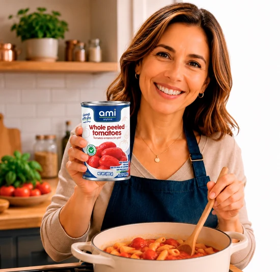

Everyday pantry essential 01
01
01Tomato
Tomato Paste
Concentrated tomato flavor for sauces, rice, soups and stews.
400 gcanEverydaycooking stapleamipart of the first range
- What it isConcentrated tomato paste for everyday cooking.
- How to use itAdd it to sofrito, sauces, rice, soups and stews for deeper tomato flavor.
- Package informationSee the package for ingredients, nutrition and storage instructions.

From can to table
Cook this recipe Tomato-and-tuna pasta
An easy weeknight meal with tomatoes, tuna and pantry staples.
Keep exploring
See tomato products